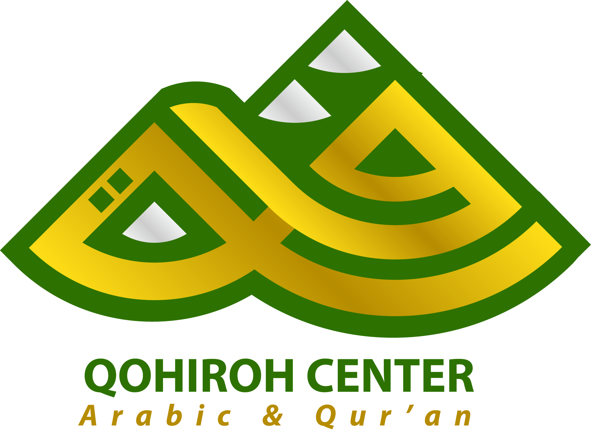

Rancangan 2 Website Terpisah (Publik & App Portal) dari Dar Dev untuk mendukung visi Ustadz Muhammad Iqbal, Lc dalam menyederhanakan pendaftaran, akademik, operasional staff, otomatisasi invoice & kuitansi, serta transparansi wali santri di Mesir.
"Penghormatan atas bimbingan visioner dari Ustadz Muhammad Iqbal, Lc. Arsitektur 2 Website ini dirancang khusus oleh Dar Dev untuk merealisasikan cita-cita beliau: membawa Qohiroh Center menjadi lembaga pendidikan modern, transparan, dan terdepan di Kairo, Mesir."
Qohiroh Digital Ecosystem secara resmi dibagi menjadi 2 Website dengan spesifikasi terfokus:
Website publik untuk calon santri, wali, dan portal ujian seleksi santri baru.
Platform khusus terproteksi login enkripsi (Role-Based Access).
Gambaran sederhana isi konten publik dan manfaat utama yang dihadirkan untuk Qohiroh Center.
Proses pendaftaran, akademik, operasional staff, otomatisasi keuangan, dan portal wali diintegrasikan ke dalam arsitektur 2 Website terpusat sesuai arahan Ustadz Muhammad Iqbal, Lc.
Empat bagian produk utama yang terdistribusi ke dalam 2 Website:
Pintu utama publik untuk mengenal Qohiroh Center dan mengakses akun seleksi ujian santri baru:
Admin dapat membuatkan akun login khusus calon santri untuk memantau 3 informasi vital:
Portal pribadi wali santri untuk memantau perkembangan anak & mengunduh berkas kuitansi di Mesir:
Portal operasional internal staff untuk mengelola berkas, otomatisasi dokumen keuangan, dan logistik Kairo:
Sistem otomatisasi dokumen transaksi resmi untuk mempercepat tugas admin & memberikan kejelasan legalitas pembayaran bagi wali santri:
Akses aman berbasis peran sesuai wewenang pengguna.
Informasi & akun seleksi di Website 1 (qohirohcenter.com).
Monitoring santri & kuitansi SPP di Website 2 (app.qohirohcenter.com/family).
Nilai, absensi, & laporan di Website 2 (app.qohirohcenter.com/campus).
Jadwal, tugas, & materi di Website 2 (app.qohirohcenter.com/campus).
Auto-generate invoice, kuitansi PDF, akun seleksi & visa terpusat di Website 2 (app.qohirohcenter.com/operations).
Pengembangan bertahap dari Dar Dev mengikuti prioritas dan kesiapan Qohiroh Center.
Infrastruktur digital dari Dar Dev yang dirancang untuk terus tumbuh dan berkembang bersama Qohiroh Center.
Rancangan backend arsitektur Dar Dev di mana Website 1 dan Website 2 berbagi satu sistem database terpusat yang aman.